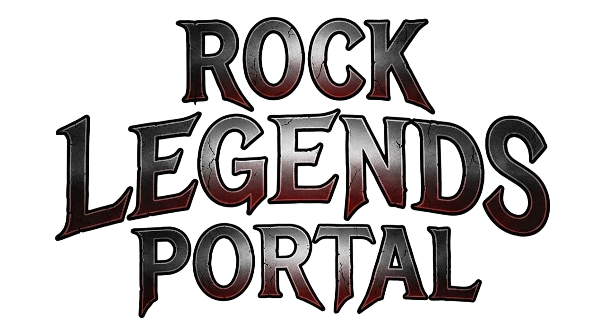
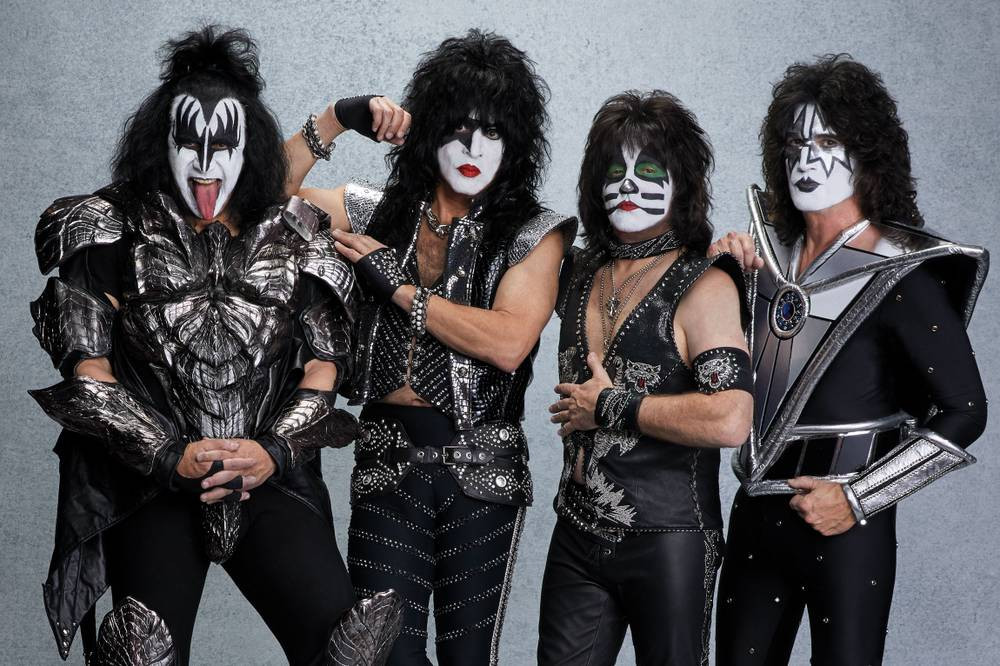
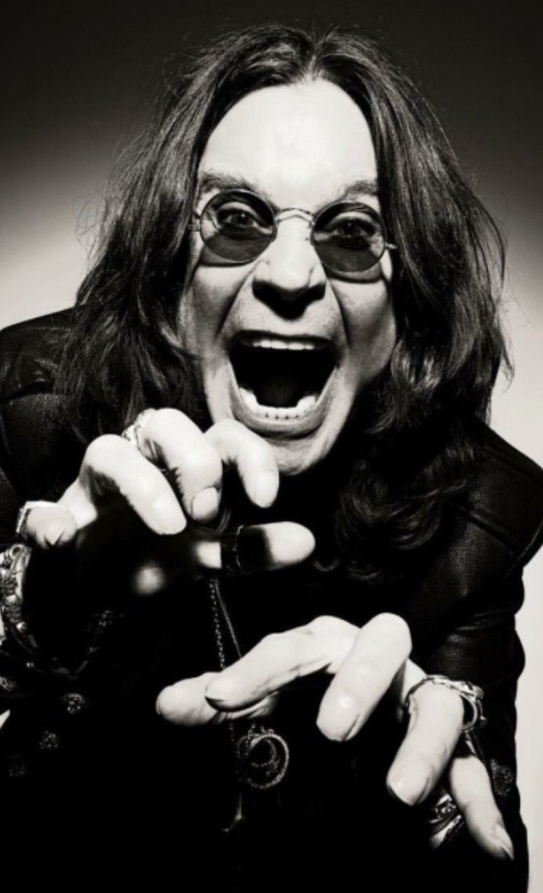
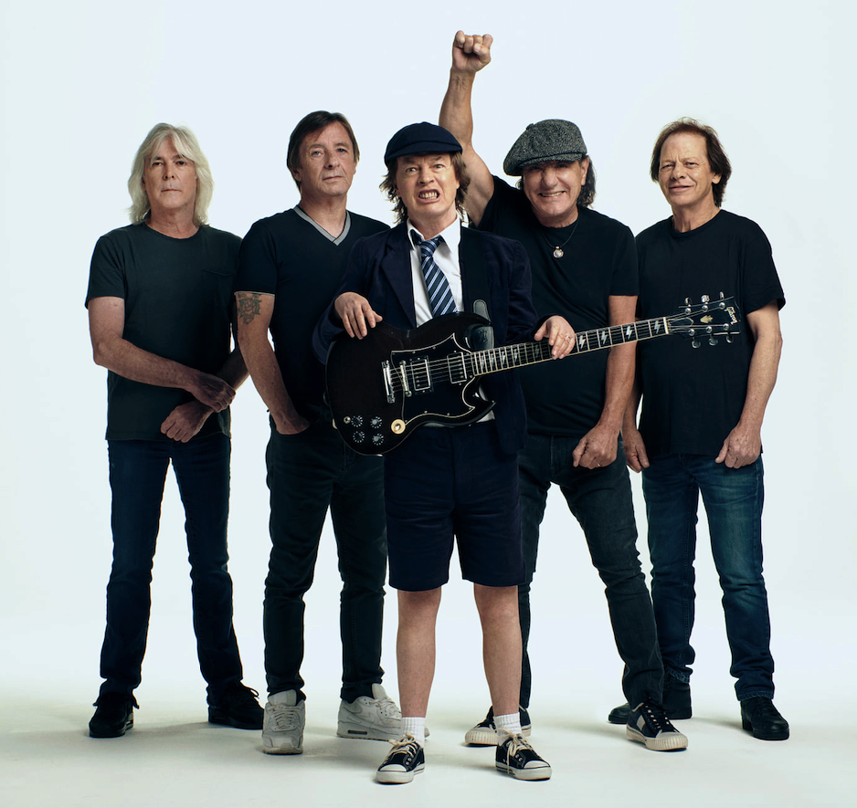
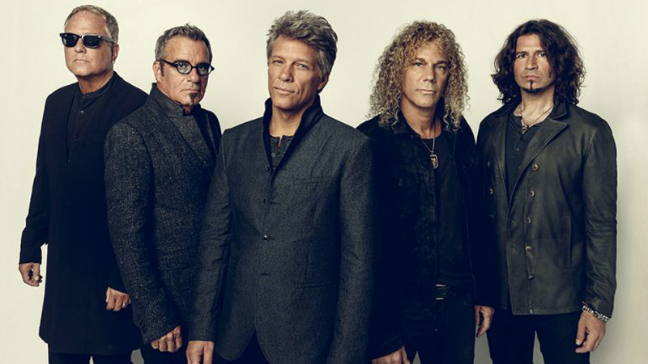
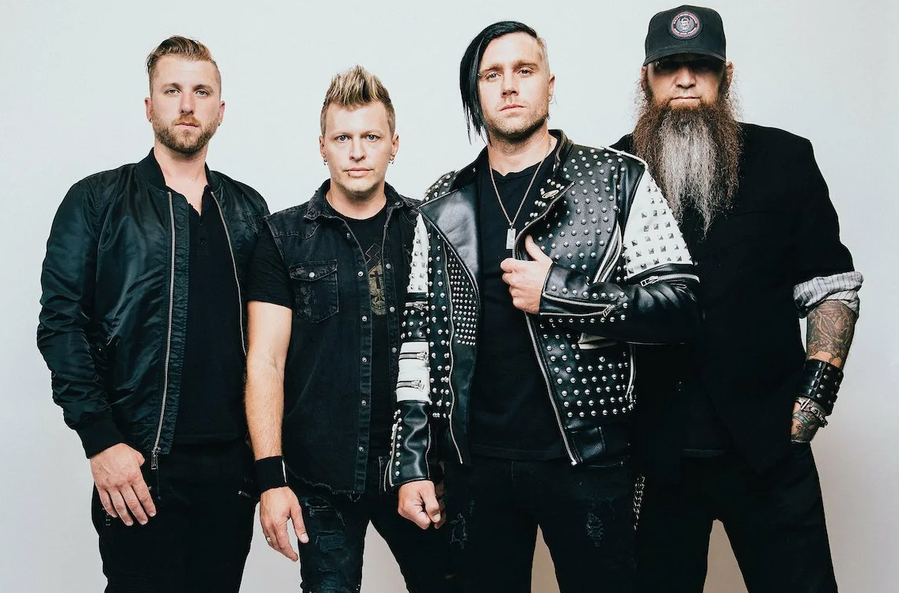
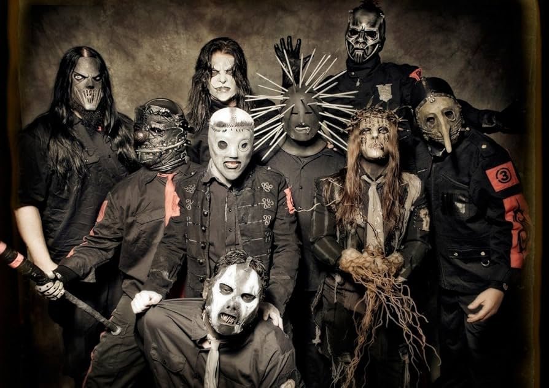
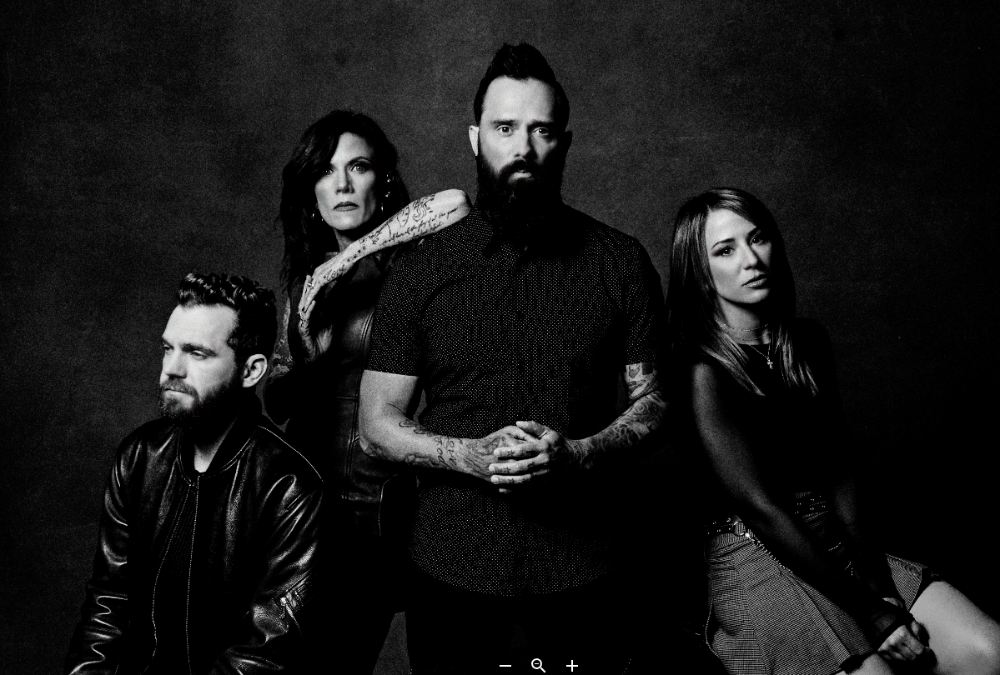
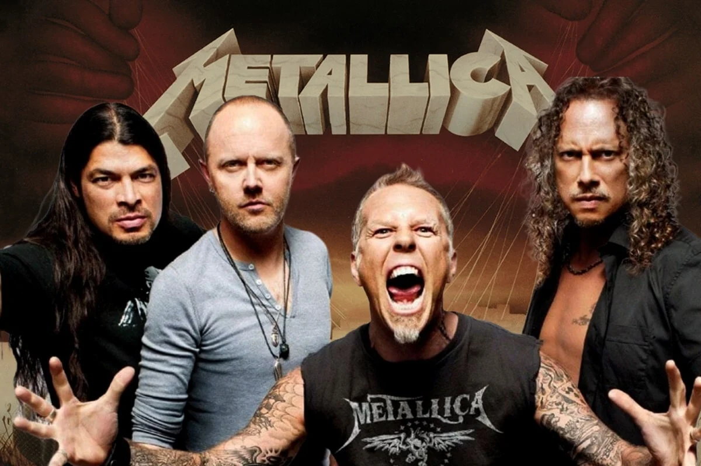
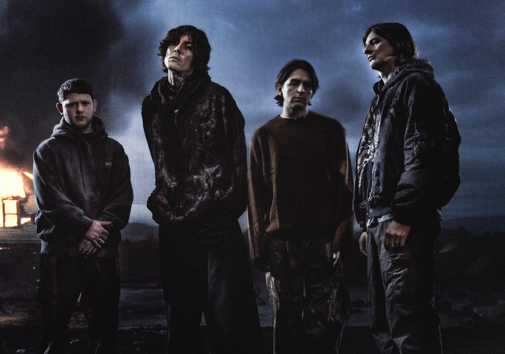

KISS
Боги грома и рок-н-ролла, ворвавшиеся на сцену в облаке огня и грима.
KISS — это не просто группа, это величайшее шоу на планете, которое началось в Нью-Йорке 1973 года.
Четверо парней — Демон, Звездное Дитя, Инопланетянин и Кот — создали целую вселенную из тяжелых риффов,
высоких платформ и взрывающейся пиротехники. За десятилетия они продали более 100 миллионов альбомов,
но их истинная стихия всегда была на стадионах. Каждый их выход — это ритуал, где кровь, огонь и гитары
сливаются в безумный драйв. Их гимны знают наизусть целые поколения, а армия фанатов KISS Army
считается самой преданной в мире. На их концертах можно увидеть, как легенды превращают ночь в яркое пламя.

Ozzy Osbourne
Князь Тьмы, великий и ужасный — человек, который стал синонимом слова «хэви-метал».
Путь Оззи начался в туманном Бирмингеме с Black Sabbath, где он заложил основы самого мрачного
и тяжелого звучания в истории. Но его сольная карьера доказала, что безумие Оззи не знает границ.
Пережив взлеты и падения, он остался «железным человеком» рок-сцены, чей голос невозможно спутать ни с кем.
Его харизма пугает и восхищает одновременно, а его концерты — это всегда баланс на грани хаоса.
Несмотря на все слухи и легенды, Оззи остается преданным фанатам и музыке, которая пробирает до костей.
Смотрите, как старый добрый безумец захватывает сцену, заставляя тысячи сердец биться в унисон.
Тьма сгущается, свет гаснет... встречайте легенду в самом центре его музыкальной империи!

AC/DC
Гром из Австралии, живое воплощение фразы «высокое напряжение».
AC/DC — это группа, которая не меняет свой стиль десятилетиями, потому что рок-н-ролл в их исполнении идеален.
С 1973 года братья Янг создают музыку, под которую невозможно стоять на месте. Грязный звук гитары
Gibson SG Ангуса Янга и его неизменная школьная форма стали главными символами стадионного драйва.
Их ритм-секция работает как швейцарские часы, а вокал пробивает любые стены. Пройдя через смену вокалистов
и трагедии, они остались верны простому и мощному звуку, который заставляет стадионы содрогаться.
Если вы готовы к настоящей встряске, то это видео — ваш билет в один конец на «шоссе в ад».
Пристегните ремни: сейчас по вашим венам ударит ток мощностью в несколько тысяч вольт!

Bon Jovi
Герои стадионного рока из Нью-Джерси, покорившие мир своей искренностью и безупречными мелодиями.
Джон Бон Джови и его команда доказали, что рок может быть не только тяжелым, но и невероятно душевным.
В 80-х они стали символом эпохи, объединив драйв глэм-рока с текстами о жизни простых парней и больших мечтах.
Их баллады поет весь мир, а боевики заставляют прыгать целые города. Это музыка о надежде, любви
и о том, что никогда нельзя сдаваться, даже если ты «живешь в молитве». На сцене они превращаются
в единый механизм, даря фанатам ощущение праздника и свободы. Каждое их шоу — это гигантский хор из тысяч голосов.
Почувствуйте атмосферу единства и драйва, которая царит на их выступлениях.

Rammstein
Грохот немецкой индустриальной машины, не знающей пощады и компромиссов. С 1994 года шестеро парней из
Восточного Берлина превращают музыку в обжигающий сплав металла, электроники и чистого огня. Тилль Линдеманн и
его команда создали эстетику, где провокация встречается с идеальной дисциплиной звука. Их выступления — это не
просто музыка, это тотальный театр пиротехники, где каждый рифф подкреплен столбом пламени, а каждое слово впивается
в сознание своей тяжестью. Монументальные декорации, едкий черный юмор и ритм, под который маршируют стадионы по
всему миру. Энергия, накопленная годами, достигает критической точки, и механизмы приходят в движение.

Three Days Grace
Мастера альтернативного рока из Канады, чьи песни стали голосом целого поколения, переживающего внутренние бури.
Three Days Grace мастерски передают чувства боли, зависимости и борьбы за право быть собой. Их музыка построена на честных
текстах и пробивных припевах, которые заставляют стадионы петь в один голос. Смена вокалиста лишь подтвердила, что дух группы
сильнее любых обстоятельств, а их верность жесткому и мелодичному звуку остается неизменной. Каждое выступление — это выплеск
накопившихся эмоций, позволяющий каждому в зале почувствовать, что он не одинок в своей битве. Гитара выдает знакомый
перегруженный звук, и зал погружается в атмосферу искреннего рок-драйва.

Slipknot
Девять масок, воплощающих коллективный кошмар и первобытный хаос Айовы. Slipknot ворвались в индустрию на рубеже веков, принеся с
собой невиданный уровень агрессии, перкуссионного безумия и визуального террора. Это не просто группа, это культ, объединивший «магготов»
по всему миру под знаменем тотального самовыражения и боли. За пугающими образами скрывается ювелирная работа со звуком, где тяжесть встречается
с мелодией, а ярость — с глубоким смыслом. Каждое их шоу — это контролируемый взрыв, где грань между сценой и толпой стирается в
едином порыве безумия. Маски надеты, барабаны начинают свой беспощадный марш, и клетка открывается.

Skillet
Проповедники драйва и мощного альтернативного рока, доказавшие, что светлая энергия может быть по-настоящему тяжелой. Skillet — это
уникальный сплав жестких гитарных риффов, симфонических аранжировок и пронзительного мужского и женского вокала. Джон Купер и его
команда создали музыку, которая становится гимном для тех, кто ищет силы в самые темные времена. Их песни полны борьбы, веры и несокрушимого
духа, что делает каждое выступление максимально эмоциональным и честным. Невероятная самоотдача на сцене и контакт с залом превращают их
шоу в мощный заряд бодрости. Напряжение в зале растет, свет софитов концентрируется в одной точке, и звучат первые такты легендарного хита.

Metallica
Абсолютные титаны, переписавшие законы тяжелой музыки и превратившие трэш-метал в мировое достояние. Выйдя из гаражей Сан-Франциско в начале 80-х,
Хэтфилд и Ульрих создали фундамент, на котором стоит вся современная сцена. Их путь — это история преодоления, трагедий и оглушительных побед,
закрепивших за ними статус главной метал-группы планеты. От яростных скоростных боевиков до глубоких баллад, их музыка проникает в саму
суть человеческой ярости и надежды. Миллионы фанатов, бесконечные турне и звук, который узнается с первой же ноты. Свет гаснет, на экранах
появляется легендарная заставка, и первые аккорды разрезают тишину.

Bring Me The Horizon
Главные хамелеоны современной тяжелой сцены, проделавшие путь от сурового дэткора до футуристичного рок-звучания. Оливер Сайкс и его группа
из Шеффилда никогда не боялись экспериментировать, смешивая металл с электроникой, поп-музыкой и оркестрами. Они стали символом эволюции,
постоянно бросая вызов ожиданиям и создавая тренды, за которыми следует весь мир. Их шоу — это высокотехнологичное погружение в мир визуального
искусства и мощного звука, где старые хиты соседствуют с ультрасовременными композициями. Группа выходит за рамки жанров, создавая нечто
совершенно новое и захватывающее. Время экспериментов закончилось, пришло время чистого действия.